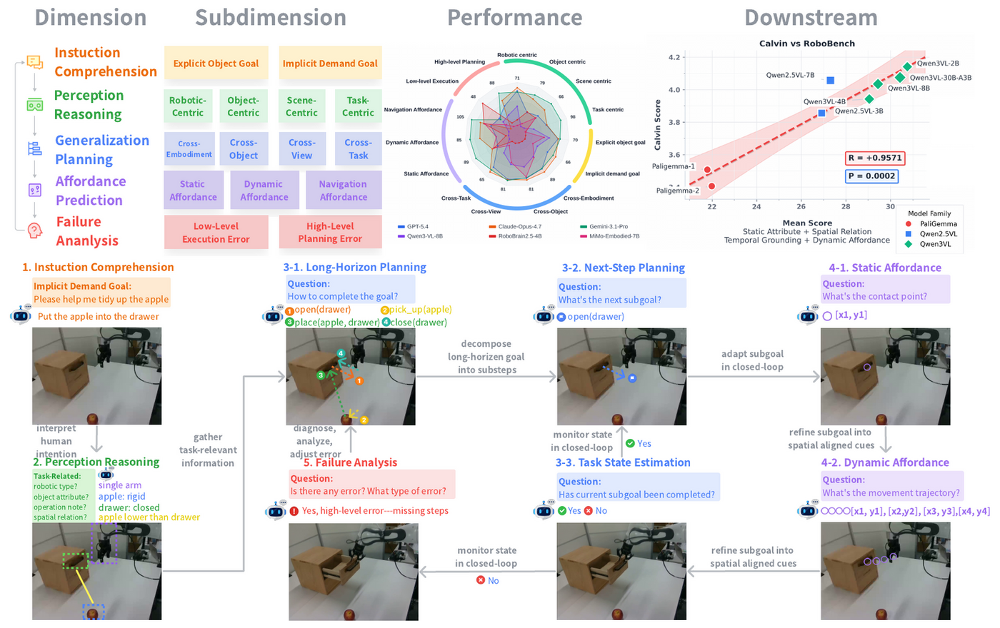
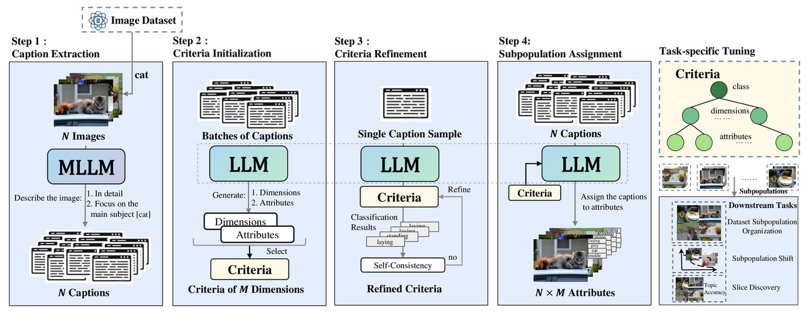
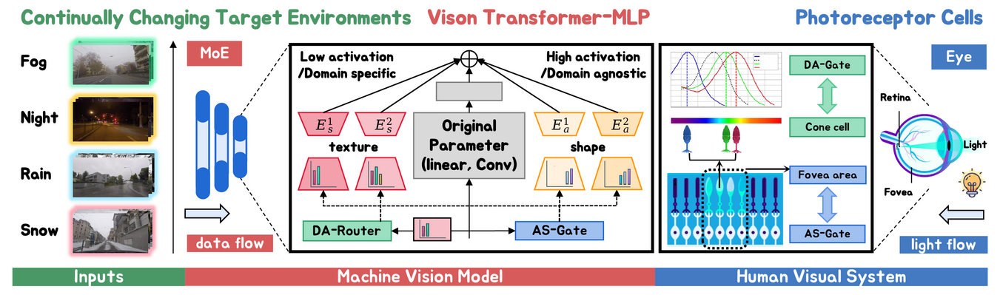
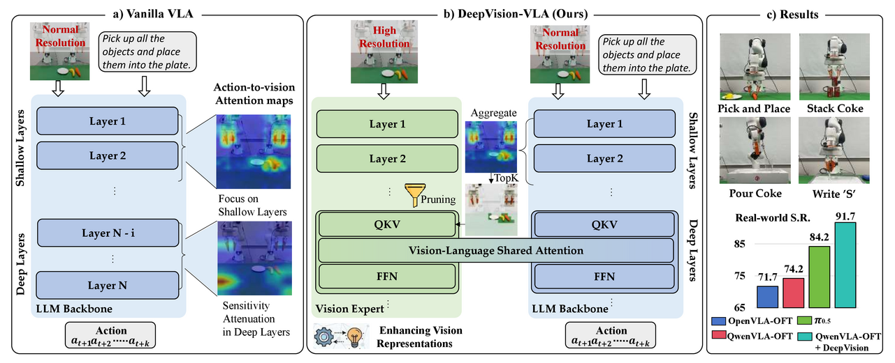
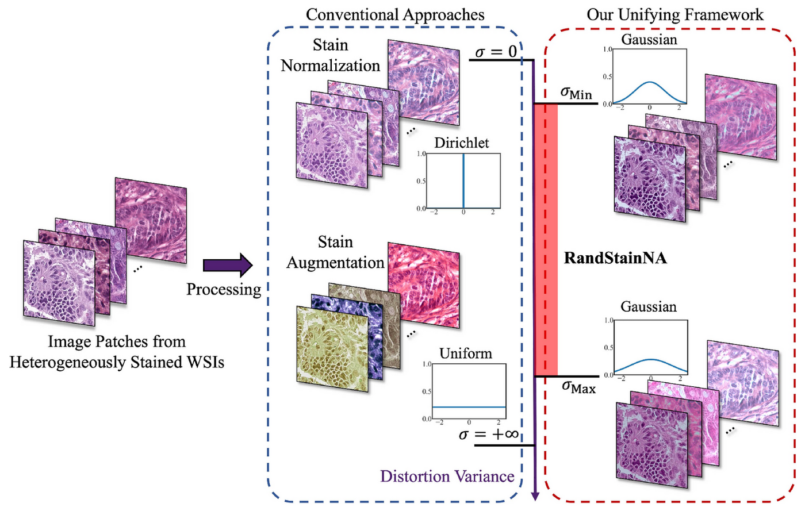
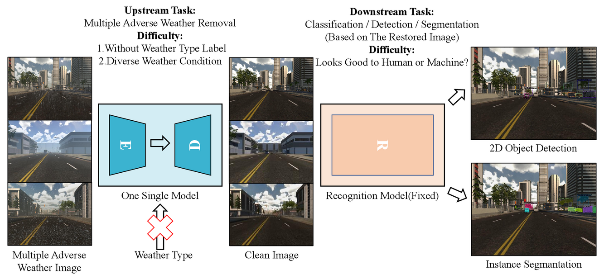
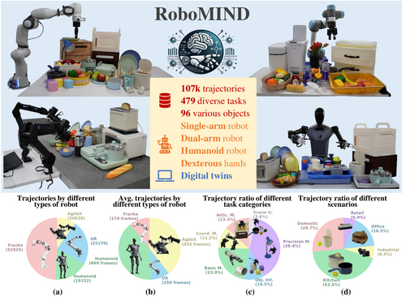
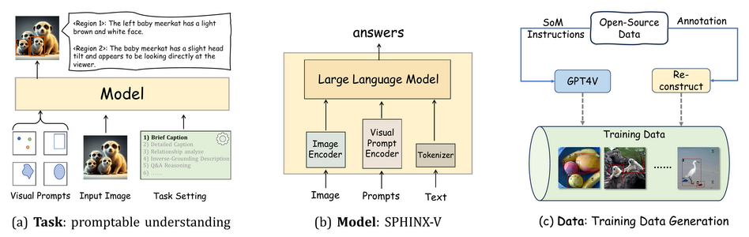
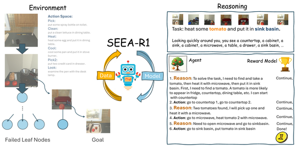
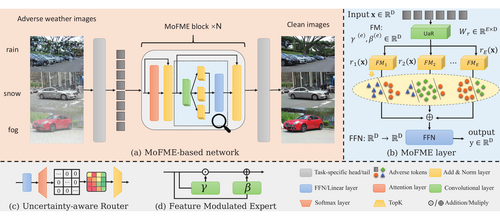

My name is (罗峪霖). I’m a PhD student (since 2023) at the School of Computer Science, Peking University, advised by Assistant Professor Shanghang Zhang. I received my Bachelor’s degree in Automation from Shanghai Jiao Tong University in 2023.
My research focuses on generalizable embodied foundation models for the open world:
- Building embodied foundation models🤖 that generalize across objects, skills, embodiments, scenes, and tasks in unstructured, open-world environments.
- Studying the co-evolution of models and data🔁 to scale embodied intelligence from narrow benchmarks to real-world generalization.
Embodied AI Researcher
- My Research Interests: generalizable embodied foundation models for the open world, with a focus on the co-evolution of models and data.
- Generalization focus: L1 in-domain → L2 distribution shift → L3 compositional → L4 causal-mechanistic → L5 open-world continual.
- First / co-first author of 5 accepted papers at CCF-A/B venues.
- ~785 citations, h-index 12 (Google Scholar).
🔥 News
- 2026.07: 🎉 RoboBench is accepted to ECCV 2026. (first author)
- 2025.11: 🎉 MoASE is accepted as Oral at AAAI 2026. (co-first author)
- 2025.09: 🎉 SEEA-R1 is accepted to NeurIPS 2025.
- 2025.04: 🎉 RoboMIND is accepted to RSS 2025.
- 2025.01: 🎉 Draw-and-Understand is accepted to ICLR 2025.
- 2024.07: 🎉 SSD-LLM is accepted to ECCV 2024. (first author)
- 2023.12: 🎉 MoFME is accepted to AAAI 2024.
- 2023.09: 🎓 Started PhD at Peking University, advised by Prof. Shanghang Zhang.
- 2023.06: 🎓 Graduated with B.Eng. in Automation from Shanghai Jiao Tong University.
- 2022.06: 🎉 RandStainNA is accepted to MICCAI 2022. (co-first author)
🏫 Educations
- 2023.09 - Present: PhD in Computer Science, Peking University.
- 2019.09 - 2023.06: B.Eng. in Automation, Shanghai Jiao Tong University.
💼 Internships
- 2025.12 - Present: Research Intern, Simplexity Robotics (至简动力).
- 2024.08 - 2025.10: Research Intern, Beijing Academy of Artificial Intelligence (BAAI).
- 2024.03 - 2024.08: Research Intern, ByteDance.
📃 Publications
ECCV 2026
{kind=link}

ECCV 2024
{kind=link}

AAAI 2026 · Oral
{kind=link}

Preprint 2026
{kind=link}

Look Before Acting: Enhancing Vision Foundation Representations for Vision-Language-Action Models
Short name: Look Before Acting
arXiv preprint, 2026
MICCAI 2022
{kind=link}

Preprint 2023
{kind=link}

WM-MoE: Weather-Aware Multi-Scale Mixture-of-Experts for Blind Adverse Weather Removal
Short name: WM-MoE
arXiv preprint, 2023
RSS 2025
{kind=link}

RoboMIND: Benchmark on Multi-Embodiment Intelligence Normative Data for Robot Manipulation
Short name: RoboMIND
Robotics: Science and Systems (RSS), 2025
ICLR 2025
{kind=link}

Draw-and-Understand: Leveraging Visual Prompts to Enable MLLMs to Comprehend What You Want
Short name: Draw-and-Understand
International Conference on Learning Representations (ICLR), 2025
NeurIPS 2025
{kind=link}

SEEA-R1: Tree-Structured Reinforcement Fine-Tuning for Self-Evolving Embodied Agents
Short name: SEEA-R1
Advances in Neural Information Processing Systems (NeurIPS), 2025
AAAI 2024
{kind=link}

Efficient Deweather Mixture-of-Experts with Uncertainty-Aware Feature-Wise Linear Modulation
Short name: MoFME
AAAI Conference on Artificial Intelligence (AAAI), 2024
🏆 Awards
- 2023.06: Shanghai Jiao Tong University Outstanding Graduate.
- 2021.12: Huawei Scholarship.
👓 Services
- Conferences: Reviewer of CVPR, NeurIPS, ICLR, AAAI, ECCV.